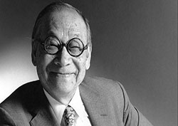
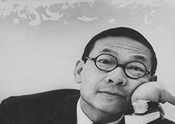
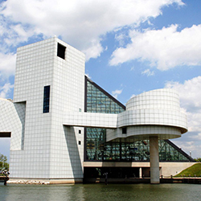
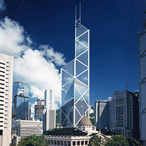

I.M. Pei, who died May 16 at age 102, was endlessly charming, with a wide smile and impeccable manners.
Competitors were sometimes thrown off by the unflappable geniality, since he was a shrewd competitor,
adept at luring clients and pleasing them. He was also passionate about the power of architecture.
People in the field who were close to him, recalling him after his death, said that the warmth was innate
and not for show. “You think of architects who seem to lead with their ego, and he was never like that,”
said David Childs, a consulting design partner with SOM, a firm that often competed with Pei’s. “He was
very generous to me when I was a 28-year-old kid.”

He first encountered Pei while working on the staff of the Pennsylvania Avenue Development Corporation, a
redevelopment agency in Washington. Pei wanted to know the precise angle of the avenue in relationship to
the National Mall. That relationship would become the basis of his design of interlocking triangles for the
famed East Building of the National Gallery of Art.
“He was gentle in demeanor but forceful in his convictions,” added Mr. Childs.
Here are recollections of colleagues, erstwhile competitors and friends on Pei’s enduring legacy.
Guy Nordenson A structural engineer, who has worked with the firm Pei Cobb Freed & Partners, Mr. Nordenson collects
Pei stories. Recognizing that he was an underdog choice for the design of the John F. Kennedy Presidential Library
in Boston, Pei learned what he could about Jacqueline Kennedy, who would make the choice. For her visit, “He had the
office redone, every detail in place, down to placing flowers he knew she liked in the reception area.” Pei’s legendary
charm and self-effacing manner endeared him promptly to Mrs. Kennedy, and she chose him for the library that would rise
on Columbia Point on the Boston waterfront.

David Adjaye The Ghanaian-born architect, who is based in London, designed the Smithsonian Museum of African American
History and Culture, down the Washington Mall from Pei’s wing of the National Gallery. He “locked onto Pei quite early,”
he said, even though Pei was at the time anything but fashionable among young architects.
“I related to his very distinct trajectory as an immigrant who comes to America, makes it his home and finds an ability to
read the local landscape,” said Mr. Adjaye, who has an office in New York. “He quickly understands how to make an American
building. Then he translates it to other places.”
Later in Pei’s career, the Fragrant Hill Hotel, a modest rambling structure built around beloved trees and gardens in an ancient
hunting preserve outside Beijing, marked his architectural return to his native China. “He goes back to Suzhou, China, where he
comes from, this city of gardens with an amazing pedigree of architecture,” Mr. Adjaye said.

Norman Foster “In the days we drew by hand, we used sharp number 4A pencils,” recalled Mr. Foster, the London-based architect who
put a glass dome atop Berlin’s Reichstag. “If you look at the range of his work, the link is the recurring geometry, which produces
a kind of triangulated edge. That edge is in the Louvre Pyramid and the National Gallery. I see 4A sharpness, a kind of razor-sharp
clarity.”
Renzo Piano “I met I.M. Pei in Paris when he was working on the Louvre with the engineer Peter Rice,”
said Mr. Piano, the Genoa and Paris-based architect, speaking by phone from a taxi. Rice was among the most
admired structural engineers of the time, helping Pei realize the extraordinarily delicate glass pyramid entrance
to the museum. “They were sitting at a table with pizza, and they were talking about working with light,”
Mr. Piano added. “The poetic for me is walking below the pyramid on the lacy shadows cast by the steel and crystal above.”

The firm’s dedication to innovation and the expressive use of engineering led to the most traumatic events in its
history. The nearly complete John Hancock building in Boston began shedding gigantic sheets of glass in 1973. The
building did not open for years, at vast additional cost.
Disputes over the design almost put the firm out of business. “They hung together,” recalled Mr. Nordenson. Pei’s
partner on the project, Henry N. Cobb, “was at the vanguard of vanquishing that crisis and he did it in a very
sophisticated way,” Mr. Nordenson continued. “They addressed the issues head on and were able to keep the confidence
of the client.”
Billie Tsien “He was an incredible gentleman and very generous with us, even though he did not know us well,” said
Ms. Tsien, a founder of the New York firm Tod Williams Billie Tsien. “He had been asked to design an Asian library
at the University of California at Berkeley, and he suggested us instead. That was for me a very important project
because it connects East and West, which I feel is what my whole life has been about.”
Ms. Tsien sees “a thread” between the Kennedy library and the Barack Obama Presidential Library in Chicago that her
firm is designing. She saw that exhibitions at the Kennedy library were reconfigured as the early emphasis on the
assassination faded over time, “and the importance of his family history and other achievements came forward.”
Mr. Pei’s library “taught us that the building needs to be clear and strong as a marker, but flexible enough to
change inside.”
Calvin Tsao Working as a young architect in Pei’s firm before forming his own, Tsao & McKown, Mr. Tsao recalled
that “he was one of my most profound mentors. When he saw a good idea he would always push you to take it farther.
But he would always acknowledge your authorship.”
“Detail was key for him,” he said. “He cared about the details of the relationship with the client and of the design.”
Mr. Tsao was supposed to have lunch with Pei last Monday, but Pei’s nurse said he wasn’t feeling well. Mr. Tsao
left on a business trip only to learn of Pei’s death on his return. “I learned persistence and perseverance from
him — and the power of charm, which is not easy to learn.”
When Mr. Tsao left Pei’s office to form his own firm, “his parting words were, ‘don’t get seduced by sexy projects.
A good client will nurture you. Pick your client, not the project.’”
{kind=link}
{kind=link}
{kind=link}
{kind=link}